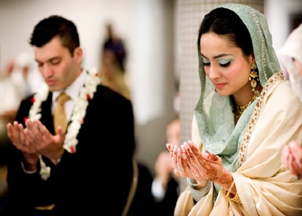
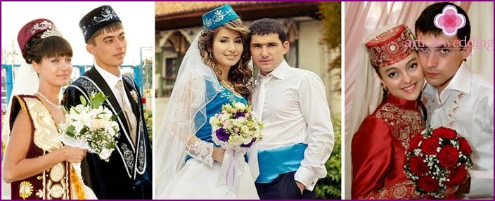

,,Dobrogea este pământul armoniei, românii sunt frații noștri” -Iusuf Murat, liderul spiritual al musulmanilor din România
După aproape 140 de ani de la alipirea Dobrogei la țara-mamă, comunitatea turco-tatară consideră că sunt în patria lor. Obiceiurile localnicilor, indiferent de religie, au ajuns să se confunde, iar etniile să se amestece. Declinul demografic al populației și pierderea tradițiilor și a limbii materne îi alarmează pe aparătorii nației musulmane. Astfel, au venit în ajutorul copiiilor și tinerilor tătari și turci cu câteva clase opționale în limba maternă și cursuri facultative de limbă, istorie și cultura turco-tătară. În prezent, căsătoriile mixte între musulmani și ortodocși sunt consimțite de ambele părti ale ramurilor, care până în ’90 erau blamate.
 In Dobrogea nu mai este nimic strict autentic turcesc sau tătăresc, deoarece multe elemente au fost prelucrate, iar cultura a suferit schimbări de ambele părți. Pentru comunitatea turco-tătară din Dobrogea întemeierea unei familii are o deosebită însemnatate. În trecut, nunțile aveau loc primăvara sau toamna, după strânsul recoltei. Nunta este un prilej de a aduna întreaga comunitate, pentru a împărți bucuria mirilor și a familiilor acestora. Ceremonia nunții trece prin mai multe etape: Ayttırıp barmak². La casa miresei sunt trimişi cawşılar din rândul rudelor, prietenilor, însărcinaţi să ducă tratativele în legătură cu desfăşurarea căsătoriei, apoi se organizează loksa toy³, la care participă numai femeile.

Are loc la locuinţa fetei. Sunt înmânate daruri logodnicei şi familiei sale de către familia mirelui (veşminte, cafea, zahăr etc.)
Durata ceremonialului nunţii era de 4-5 zile.
În prima zi, adică miercuri, la locuinţa fetei avea loc kawe tüymek⁵.
În ziua a doua, joi, avea loc petrecerea fetelor, când se servea köbete⁶.
Vineri seara, în locuinţa miresei avea loc kına toy⁷, kına gecesı⁸. Kına⁹ se obţinea prin zdrobirea sub formă de pulbere a frunzelor unui arbore care creşte în Orientul Mijlociu. Din pulberea de culoare cărămizie se făcea o pastă cu care se ungeau degetele de la mâini până la podul palmei, mijlocul palmei, câlcâiele picioarelor, părul. Semnificaţia acestui ritual ar fi acceptul miresei de a se căsători. Seara tinerii interpretau şın-uri¹⁰,reprezentând modalitatea de comunicare între perechile de tineri şi tinere, aşezaţi faţă în faţă, păziţi de un kart agası¹¹, care avea grijă ca cele două tabere să nu se apropie prea mult.
În cea de-a patra zi a nunţii se oficia de către vekil baba şi martori, în locuinţa fetei, cununia religioasă, nikâ, fără ca mirele să fie de faţă. Mireasa se afla într-o încăpere alăturată, ascunsă după un paravan şi răspundea la cererea consimţământului de căsătorie de-abia a treia oară. În timp ce în casa miresei se celebra cununia religioasă, în casa mirelui avea loc koraz tellemek¹². Se frigea un cocoş, care era împodobit cu fâşii colorate de hârtie, apoi era aşezat în mijlocul unei tipsii, înconjurat de alte feluri de bucate tradiţionale. Această tipsie era purtată de kart agası¹¹ şi aşezată în faţa musafirilor. Acest obicei reprezintă separarea miresei de părinţi în vederea întemeierii unei noi familii şi renunţarea la burlăcie a mirelui. Cocoşul avea o semnificaţie aparte în credinţa tătarilor musulmani din Dobrogea. După credinţa lor, în fiecare dimineaţă, la răsăritul soarelui, un cocoş alb sfânt, aflat în raiul musulmanilor, îşi arăta recunoştinţa faţă de Tanrı¹³, înfoindu-şi penele. Atunci toţi cocoşii din curţile oamenilor încep să cânte, anunţând lumina, răsăritul soarelui.
A cincea zi a nunţii dimineaţa începe üyken toy¹⁴. Un grup de rude, prieteni, bărbaţi şi femei din partea mirelui pornesc spre casa miresei. Bărbaţii purtau mendıl¹⁵. Cu asemenea batiste erau împodobite şi urechile, cozile cailor celor din alaiul miresei. Din partea fetei kuda¹⁶ şi kudagıy¹⁷ însoţesc mireasa şi alaiul de nuntă până la casa mirelui, obicei numit kelĭn tüşĭrmek. Un obicei vechi era ca tinerii din satul miresei să iasă în întâmpinarea celor care veneau din partea mirelui şi să ceară o sumă de bani pentru a-i lăsa să treacă. Mireasa era purtată pe braţe spre o căruţă acoperită, mögedek¹⁸, iar alaiul pornea spre casa mirelui, în apropierea căreia se afla un grup de tineri cărora li se oferea tokız, compus din nouă obiecte lucrate manual de către mireasă. Mireasa era întâmpinată de o melodie kelĭn awası¹⁹, iar deasupra capului ei era rotit de trei ori un cocoş viu, ceea ce semnifica supunerea în faţa voinţei soţului.
Unul dintre obiceiurile din timpul nunţii este kiyew canı²⁰, noaptea de dinaintea nunţii, când în casa mirelui se adună tineri burlaci sau nou căsătoriţi şi petrec. Tot atunci are loc şi kiyew tıraşı²¹, pentru care se alege un kart agası¹¹. Astfel, tinerii îşi luau rămas bun de la cel care fusese până atunci bekâr²².
Pereţii camerei miresei erau împodobiţi cu obiecte artizanale, făurite de mâna miresei, mendĭl, şewre, marame etc., iar patul era ascuns de o perdea, gerdek.
În folclorul tătarilor din Dobrogea există un cântec referitor la împodobirea cocoşului:
| Tătară | Română |
|---|---|
| Korazımnı kaşırdılar | După cocoş au alergat |
| Damdan damga aşırdılar | De peste tot l-au căutat |
| Suwına pĭlaw pĭşĭrdĭler | Un pilaf bun au gătit |
| Kursakların şĭşĭrdĭler. | Burţile şi-au burduşit. |
| Ki-ki-ri ki-kim kik koraz | Ki-ki-ri ki-kim cocoş |
| Çi-çi-ri çi-çim çik koraz | Çi-çi-ri çi-çim cocoş |
| Korazşıgım bekâr edĭ | Cocoşul meu becher era |
| Awullarda uşar edĭ | Prin ogradă el zbura |
| Şöplĭklernĭ şaşar edĭ | Prin gunoaie mereu scurma |
| Kalawlarda öter edĭ | Cocoţat pe gard cânta |
| Ki-ki-ri ki-kim kik koraz | Ki-ki-ri ki-kim cocoş |
| Çi-çi-ri çi-çim çik koraz | Çi-çi-ri çi-çim çik cocoş |
Venirea pe lume a unui copil în orice familie aduce o mare bucurie. Perioada de sarcină se numeşte gebelĭk. Pe vremuri femeile năşteau acasă cu ajutorul unor femei ebanay, care asistau la naştere, tăiau cordonul ombilical şi, înainte de a i se da un nume oficial, puneau noului născut un ebedi kündĭk adı²⁴. După 10-15 zile de la naştere, copilului i se pune un nume. Imamul sau o rudă apropiată, care cunoaşte bine Coranul, ia în braţe copilul şi de trei ori îi şopteşte la ureche numele însoţit de Ezan²⁵.
Un eveniment important în viaţa copiilor de sex masculin, ce aparţin religiei islamice, este circumcizia. În tradiţia tătarilor din Dobrogea, evenimentul se numeşte sünnetke otırmak şi are loc când copilul de sex masculin împlineşte doi sau şapte ani. Cauza acestei intervenţii este de natură religioasă şi igienică. Atunci când cineva de altă religie doreşte să adopte credinţa islamică, sünnet-ul este obligatoriu.
Chiar şi în perioadele cele mai grele, tătarii din Dobrogea au respectat acest obicei. Prin circumcizie băiatul devine bărbat.
De multe ori, la ţară, câteva familii care aveau băieţi de vârste apropiate se uneau şi celebrau sünnet toy împreună. La acest eveniment lua parte tot satul. În trecut, în Dobrogea, existau aşa zişii sünnetşıler²⁷. Acum totul are loc într-o instituţie sanitară, intervenţia se face sub anestezie, sub control medical. Copilul care urma să fie supus circumciziei, era îmbrăcat cu un costum specific, plimbat prin tot satul într-o cabrioletă împreună cu alţi copii din sat, apoi adus în casa unde urma să aibă loc evenimentul, luat în braţe de o rudă apropiată şi dus în faţa sünnetşı. Copilul primea multe daruri din partea părinţilor, rudelor, a tuturor participanţilor la eveniment.
Ca şi la nunţi, în cadrul ceremonialului de circumcizie se împodobea un cocoş.
În limba tătară există o zicală: Az yaşa, köp yaşa, kelĭr ölĭm er başka (De trăieşti puţin sau mult, tot vine moartea).
Există trei momente cu obiceiuri care definesc acest trist eveniment: obiceiuri care preced moartea, atunci când survine o boală grea,
incurabilă; obiceiuri legate de înmormântare şi obiceiuri de după moarte.
Atunci când un om zace bolnav, el este vizitat de rude, prieteni, apropiaţi, vecini, este încurajat că se va vindeca. Dacă boala nu poate fi învinsă şi el moare, rudele, toată comunitatea cu toţii sunt alături de familia îndoliată spunând Başınız saw bolsın (Să fiţi sănătoşi), iar cei din familie răspund Dostlar saw bolsın (Prietenii să fie sănătoşi).
Cel trecut în veşnicie este pregătit pentru înmormântare; este dus la geamie numai de către bărbaţi (femeile neavând voie să participe la înmormântare) unde este spălat, înfăşurat într-un giulgiu alb, fără sicriu, apoi îngropat. Groapa se sapă, se face o firidă laterală în partea de est, unde se aşează mortul cu faţa spre Mecca. Gura firidei este astupată cu scânduri, iar groapa se umple cu pământ. Deasupra mormântului se aşează türbe²⁹ pe care se scriu numele, data naşterii şi data morţii. Pentru pomenirea celui decedat se organizează parastas şi praznic în a treia, a șaptea, a patruzecea zi după moarte, apoi la un an.
Costumul național tătăresc reflectă trăsăturile individuale ale acestui popor.Fiecare element spune despre anumite caracteristici culturale, credințe,trăsături naționale.Portul național tătar a suferit de-a lungul timpului influențe ale popoarelor orientale,islamice și ale tătarilor din Volga.

Baza costumului tradițional al bărbaților tătari este alcătuită din yyshtan³⁰ și kulmek³¹. Deasupra cămășii se pune un cămașir sau un halat. Deasupra acestui costum se purta choba³². De obicei, era cusută din țesături de in sau cânepă. Haina era fixată la brau cu o centură din aceeași țesătură sau tricotată din lână. O trăsătură distinctivă a îmbrăcămintei tătare este forma sa trapezoidală, dimensiunea mare și luminozitatea țesăturilor. Pentru un plus de luminozitate purtau un număr mare de bijuterii din aur. Pălăriile pentru bărbații tătari erau de două feluri: pentru purtat în casă, o pălărie mică pe vârful capului, iar afară puneau peste aceasta o pălărie din pânză, pașlă sau blană în funcție de sezon. Clerul islamic al tătarilor purta turban. Încălțămintele naționale ale bărbaților erau cizme înalte din piele moale.
Pentru femei, îmbrăcămintea era mai diversă decât pentru bărbați. Aveau costume pentru perioadele sezoniere, pentru diferite scopuri (de zi cu zi, festiv) și diferă funcție de vârstă.Baza costumului tradițional feminin a fost o cămașă, pantaloni și o salopetă inferioară. Mai purtau cămăși (îmbrăcăminte scurtă fără mâneci lungi). Erau adesea cusute din catifea și împodobite cu blană și aveau un fermoar mare din argint, care îndeplinea funcție estetică. Pălăriile pentru femei variau în funcție de vârstă. Fetele purtau Kalfak³³. Femeile în vârstă purtau voaluri pe cap care coborau spre coapse.Cizmele de plimbare pentru femei erau realizate folosind tehnica mozaicului din piele sau decorate cu broderii. Pantofii de vară pentru plimbare erau cu vârful ascuțit și ușor curbat și tocul mic.

Tătarii au foarte multe cântece și dansuri împrumutate de la turci. Deosebirea dintre dansurile autentice tătărești de cele turcești este că primele nu sunt însoțite de tremurarea sânilor și a soldurilor, ci numai de mișcarea picioarelor, a brațelor și de pocnitele din degete. Asemenea multor popoare, tătarii și turcii au obiceiuri specifice de la nuntă, botez precum și la alte evenimente. Bărbații, femeile și tinerii cunosc dansurile tradiționale. Dansul bărbaților are un stil mai rapid.
Este un dans al femeilor, cu ritual rar. Cântecul este duios, iar femeile care privesc sunt copleșite de emoții, amintiri și obișnuiesc să plângă.
Dans jucat de femei încet și ușor, iar de bărbați repede și furtunos.

Este jucat de bărbații cu mișcări încete. Dacă sunt doi dansatori pe ringul de dans, aceștia așteaptă de la privitori să primească bani. Banii nu rămân la dansatori, ci sunt dați cântătorilor. Acestea sunt doar câteva dintre dansurile tradiționale turco-tătare.
Etnia, istoria de familie și cea regională ale turcilor și tătarilor se reflectă și se păstrează șipentru tradițiile gastronomice.Mâncarea este dovada trecutului comun al turcilor și tătarilor și a religiei islamice pe care o împărtășesc. Pot doar enumera câteva feluride mâncare tradiționale turco-tătare:
| Toy Șorbası³⁷ |  |
|---|---|
| Sorpa³⁸ |  |
| Tatar Așı | 
|
| Gudem³⁹ | ![]()
|
| Qus-Qus | ![]()
|
| Șuberek⁴⁰ | 
|
| Cantiq⁴¹ | 
|
| Köbete⁶ | 
|
| Baclava | 
|
| Tuluma Tatlesc⁴² | 
|

Se spunea că această sărbătoare s-a născut atunci când Tănn i-a cerut Profetului Ibrahim să-și sacrifice fiul. Când acestea se pregătea să-l sacrifice, din porunca Celui de sus a fost coborât un berbec. De atunci a rămas obiceiul de a sacrifica un animal și este ferit de orice lucru rău. Turcii și tătarii din Dobrogea sacrifică de obicei berbeci, juncani. Carnea se împarte în trei părți: O parte se oferă sărmanilor, o altă parte se împarte rudelor și prietenilor, iar a treia parte rămâne în familie. Există obiceiul de a sacrifica un animal și cu alte ocazii daca cineva s-a imbolnvait si apoi s-a vindecat sau daca in familie a avut loc un eveniment fericit.
Este sărbătoare care încheie postul de 30 de zile. Postul face parte din obligațiile impuse oricărui musulman. Din zori și până la asfințitul soarelui sunt interzise alimentele, apa și fumatul. Seara este masa de Iftar, iar în timpul nopții se servește o masă cât mai abundentă. Încheierea postului este sărbătorită de musulmani îmbrăcând haine noi, vizitându-și rudele. Copiii colindă și primesc bani sau dulciuri.
Are semnificația de zi nouă. Conform calendarului iranian, coincide cu prima zi a anului, 21 Martie. Această sărbătoare se întâlnește la toate popoarele turcice și reprezintă venirea primăverii, când încep lucrările agricole. Iată un exemplu de îndemn la muncă din folclorul tătăresc:
| Tătară | Română |
|---|---|
| Doksan şıktı, kĭrdĭ Mart, | A sosit primăvara, e Martie, |
| Ne cătaşın atay kart | Bătrâne, nu lenevi! |
| Şık ta şölge tuwın at! | Ieşi pe câmp, aruncă sămânța! |
| Nawrez, nawrezĭm mübarek! | Nawrez, nawrezul meu sfânt! |
| Bereketlĭ yıl bolsın, | Un an bogat să fie, |
| Küzde ambarlar tolsın, | Să avem parte de belșug, |
| Her şeyĭmĭz bol bolsın, | Să avem parte de belșug, |
| Nawrez, nawrezĭm mübarek! | Nawrez, nawrezul meu sfânt! |
Reprezintă renașterea naturii după o iarnă grea, când începe pregătirea pământului și are loc pe 6 mai. Toți musulmanii se adună în curtea moscheii iar după slujba religioasă, se servesc mâncăruri tradiționale: sorpa³⁸, Kalakay⁴³, botka⁴⁴, sarma⁴⁵ și sütlaş⁴⁶. În această zi, se vizitează mormintele celor dragi, ele sunt curățate, udată și se plantează flori.

Tătarii din Dobrogea sărbătoresc venirea primăverii și prin organizarea te tepreş, o serbare cămpenească. Acest eveniment se organizează
în pădurile din apropierea unor localități precum Murfatlar, Tătaru, Hagieni. Cu o zi înainte, femeile pregătesc
bucățele, mai ales Kalakay⁴³, iar bărbații împodobesc caii cu mărgele și panglici colorate. Se organizează și küreş⁴⁷.
Luptele tătărești se organizează cu ocazia sărbătorilor de primăvară. Acest sport relevă curajul, buna intenție și bărbăția tinerilor care îl practică. Lupta ia sfârșit când unul dintre adversari este pus la pământ cu spatele. Câștigătorul primește: bayrak, küreş bayrağı⁴⁸, berbeci, apoi este plimbat prin tot satul.
Iarna, oamenii comunității organizau diverse activități: jocul cu arșițe, întrecere cu arcul, lupte tătărești, talaka⁴⁹, arefena, ciyin,şın.
Talaka⁴⁹- Femeile participau la scărmanatul lânii, cusutul de plăpumi, varuitul caselor, iar fetele tinere participau la pregătirea zestrei fetelor de măritat.
Modalitate de distracție între fete pe timpul iernii. Se adunau în casa uneia dintre ele și fiecare aducea plăcinte.
Era tot o petrecere, unde participau fetele tinere și cele măritate. Împreună se distrau, cântau și dansau.
Tinerii compuneau versuri pe loc adresate fetelor pentru a le cunoaște, iar fetele răspundeau dacă acceptau. Exemple de şın:
| Tătară | Română |
|---|---|
| Mına selam alekım, bĭz de keldık | Ziua bună, iată venit-am şi noi |
| Atımın başın acımay cĭbere berdık. | Dând frâu liber calului fără milă |
| Mıradım şodır menĭm, bo yerge kelmek | Voia mi-a fost s-ajung aici |
| Tanış bolıp soraşıp adınnı bĭlmek | Să te cunosc, să-ţi ştiu numele |
| Sende dülber sını bar, manlayın cayık | Ţi-e plăcut chipul, largă ţi-e fruntea |
| Köz tutkanın bolmasa, dost bolayık | Prieteni să fim de n-ai pe altcineva |
Şın-uri compuse de fete ca răspuns:
| Tătară | Română |
|---|---|
| Alekĭm selam, hoş keldın, sen ekensın | Bine-ai venit, tu erai, iată, |
| Bahşalarda aşılgan gül ekensın | Trandafir înflorit în grădină |
| Molla tuwıl kartbabam, erensĭz soyım, | Molla nu-i bunicul, nu-s de neam ales |
| Kayda barsam yaraşır boyım. | Pot merge oriunde, nu mă las |
| Cewabım şo, sözĭm şo, sendiy caşka | Aşa-ţi răspund, unui flăcău ca tine |
| Gönıl berdĭm, kĭmsem yok senden başka. | Mi-am dat inima, pe nimeni n-am afară de tine |